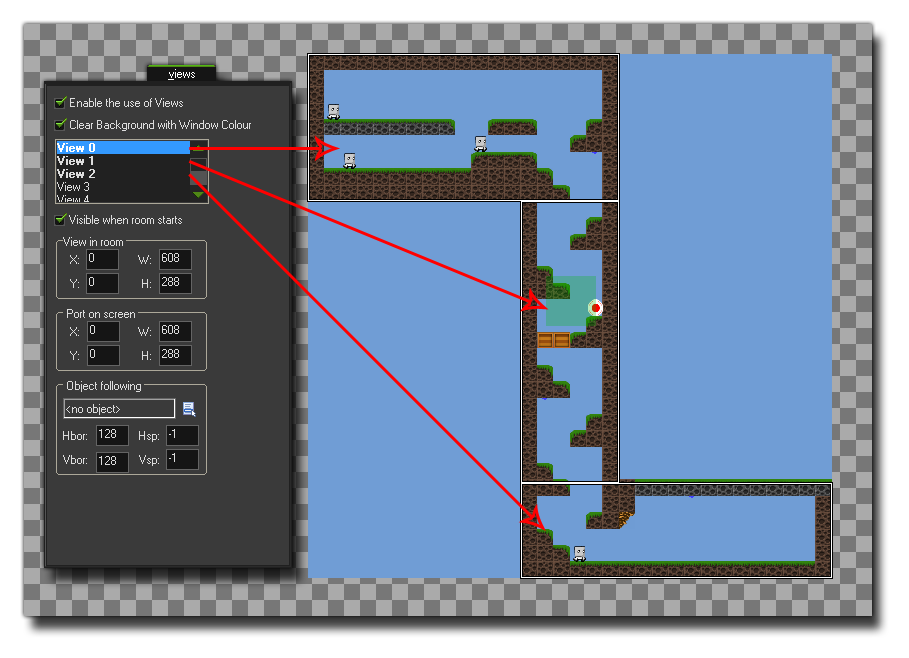

Syntax:
surface_create_ext(name, w, h);
Streit Beschreibung name Der Name des Canvas-Elements, mit dem die Oberfläche verknüpft werden soll. w Die Breite der zu erstellenden Oberfläche. h Die Höhe der zu erstellenden Oberfläche.
Kehrt zurück:
Real
Beschreibung
Mit dieser Funktion können Sie eine Oberfläche an ein Canvas-Element anhängen, das bereits auf Ihrer Webseite vorhanden ist. Dies bedeutet, dass Sie Teile Ihres Spiels effektiv teilen können, um an verschiedenen Stellen innerhalb der Seite gezeichnet zu werden. Zu diesem Zweck müssen Sie das Canvas - Element innerhalb der korrekt definiert haben *.html Seite des Spiels mit den richtigen Größen und Namen, die den Flächen entsprechen, die Sie erstellen möchten. Sie haben also Ihre "Haupt" -Leinwand und dann Ihre sekundären Flächen-Canvas-Elemente, die mit dieser Funktion den richtigen Flächen zugewiesen werden. Das folgende Bild zeigt ein Beispiel für die Einrichtung einer Seite mit drei Canvas-Elementen:
Das Seitenlayout kann schwierig sein, besonders wenn Sie möchten, dass alle Elemente korrekt ausgerichtet sind, aber sobald die schwierige Aufgabe, das Layout zu erstellen, abgeschlossen ist, können Sie dies hinzufügen html Datei als Standard-Auslagerungsdatei für das Spiel mit der HTML5-Registerkarte der Spieloptionen. Als nächstes sollten Sie Ihren Raum und Ihre Ansichten einrichten, da jeder Oberfläche eine bestimmte Ansicht zugeordnet werden muss, um die Spielbilder zu "erfassen" (siehe die Variable view) view_surface_id[0...7] ). Das Bild unten zeigt, wie der Spielraum für das obige Leinwandbeispiel aussehen würde: 
Schließlich würden Sie diese Funktion dann verwenden, um die Oberflächen zu erstellen, wobei der Name der für die Canvas-Elemente verwendeten entspricht und die Größe der Größe derselben Leinwand entspricht. Die Funktion gibt den Index der Oberfläche zurück, der in einer Variablen für zukünftige Funktionsaufrufe gespeichert werden soll. Wenn die Oberfläche zum ersten Mal erstellt wird, enthält sie möglicherweise "Rauschen", da es sich im Grunde nur um einen Speicherbereich handelt, der für diesen Zweck zur Seite gelegt wird (und der Speicher möglicherweise noch Informationen enthält). Daher empfiehlt es sich, die Oberfläche vor der Verwendung zu löschen eine Funktion wie draw_clear_alpha.
HINWEIS: Diese Funktion ist nur für die Verwendung mit dem HTML5-Modul verfügbar.

Beispiel:
s1 = surface_create_ext("surface1", 192, 550);
s2 = surface_create_ext("surface2", 608, 186);
view_surface_id[1] = s1;
view_surface_id[2] = s2;
Der obige Code erstellt zwei Oberflächen unterschiedlicher Größe, die jeweils einem anderen Zeichenflächenelement zugewiesen werden. Anschließend werden diese Oberflächen zwei Ansichten zugewiesen, sodass der richtige Teil des Raums erfasst wird.